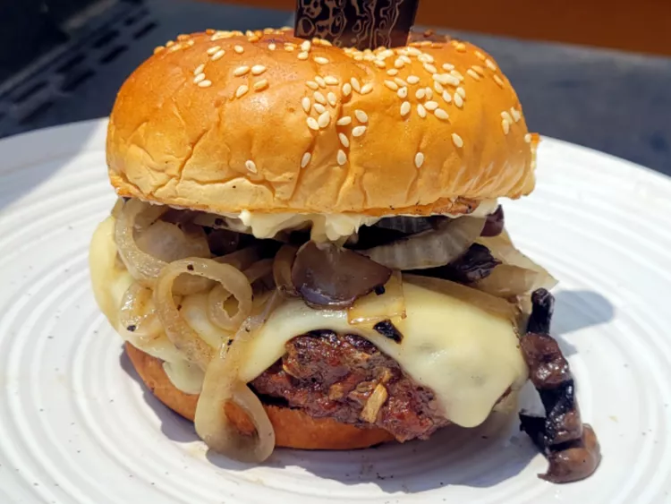

French Onion Burger

Description
These French onion burgers are made with a simple combination of ground beef and onion soup mix, then topped with Havarti cheese, onions, and mushrooms.
These burgers will become a favorite at parties.
Ingredients
- 6 hamburger buns, split
- 1/4 cup butter
- 8 ounces sliced mushrooms
- 2 onions, thinly sliced
- salt and freshly ground black pepper
- 2 pounds ground beef
- 1 (1 ounce) packet dry onion soup mix
- 12 slices havarti cheese
- 6 tablespoons mayonnaise
Steps
- Preheat a large skillet over medium heat. Place hamburger bun halves, cut-sides down, in the hot skillet until lightly toasted, 2 to 3 minutes. Remove toasted buns to a plate.
- Preheat an outdoor grill for medium heat. Heat butter in a large saucepan over medium heat on the grill. Add mushrooms and onions; season with salt and black pepper and cook and stir until mushrooms are lightly browned, about 20 minutes.
- Meanwhile, mix ground beef and onion soup mix in a bowl using your hands. Form mixture into 6 hamburger patties.
- Lightly oil grill grates. Grill burgers for about 5 minutes, then flip and grill to your desired doneness. A meat thermometer inserted near the center of patties should read 180 degrees F (82 degrees C).
- Remove burgers from heat to rest for 5 minutes. Spread each bun with 1 tablespoon mayonnaise, and add burgers; divide mushrooms and onions between burgers to serve.